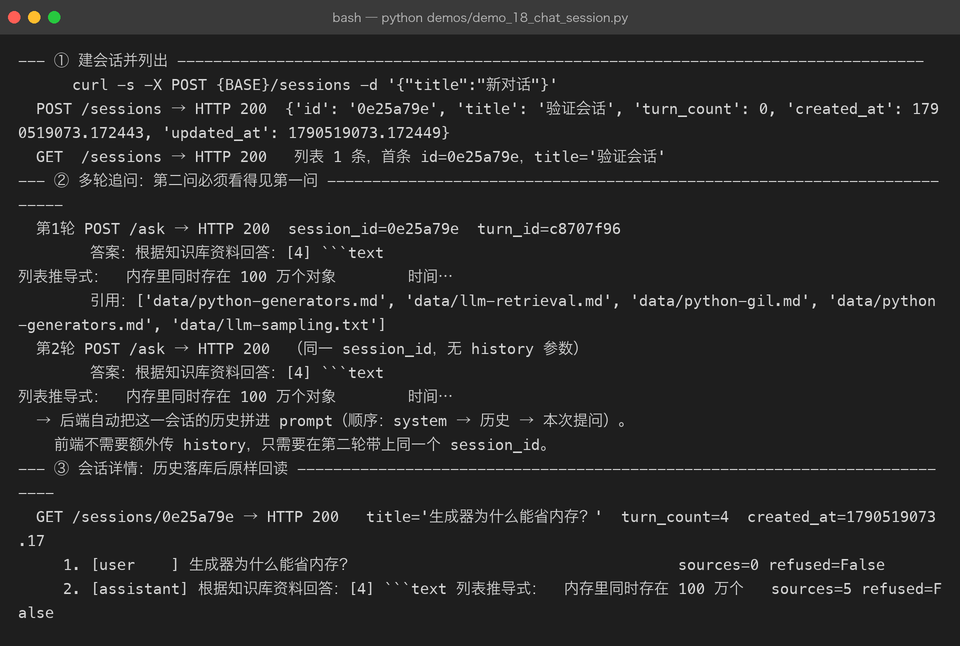
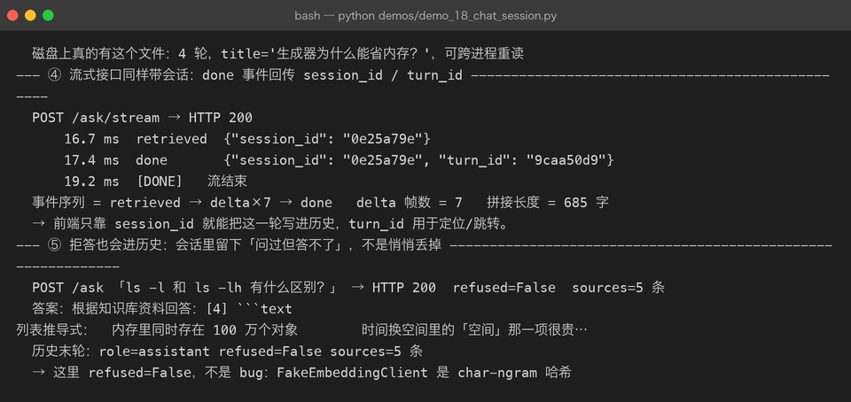
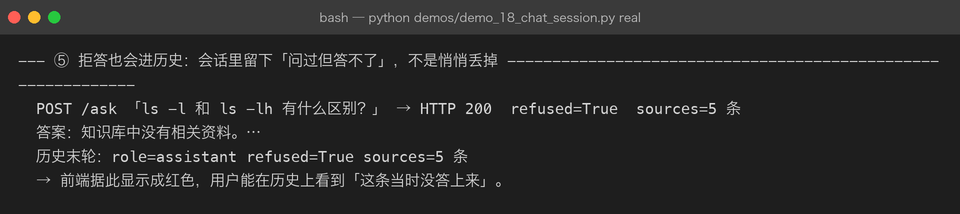
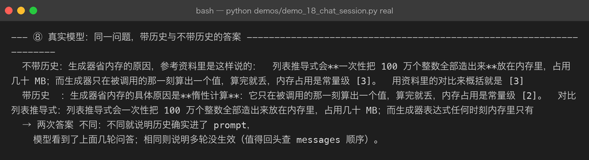
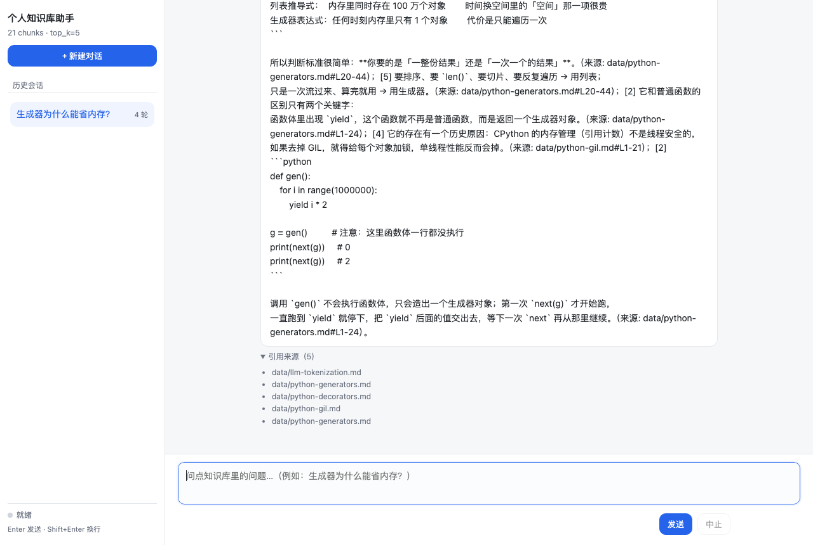

Milestone 17 — Chat UI / 会话历史 / 多轮追问
把 RAG 从「问一句答一句的接口」变成「可以连续聊的产品」。
目标
- 后端支持会话：创建 / 列表 / 详情 / 改名 / 删除；问答接口支持
session_id， 自动把 user 提问与 assistant 回答落库。 - 后端支持多轮追问：同一
session_id下的历史会自动拼进 prompt， 并按 token 预算裁剪，用户不用手动传 history。 - 前端提供零构建的 Chat UI：原生 HTML/JS/CSS，连上 SSE 就能用； 有会话列表、消息气泡、流式打字、引用来源、中止按钮。
为什么产品化是独立的里程碑
此前的 P04 一直在做「核心链路」：检索、精排、评估、可观测性、真实 LLM。 这些做完之后，你有了一个能答对问题的引擎，但用户无法连续追问：
- 每次都要把完整上下文自己塞进 prompt，体验等于在用 Postman 调接口
- 想回看之前的问答？只能看终端输出
- 一个拒答或一个引用，转眼就翻屏过去
会话历史 + 多轮追问 + 前端 UI，是把 RAG 从「脚本」变成「产品」的最后一块。
关键设计
1. 会话模型不可变
为什么这么做：FastAPI 的 /ask 与 /ask/stream 都是 async 端点，它们在线程池里 调用同一个 SessionStore。如果 turns 是 list，并发两个请求同时 append， 后一个线程的读-改-写会覆盖前一个线程的结果 —— 历史里会丢轮次。
class Session:
session_id: str
title: str
turns: tuple[Turn, ...] = ()
def with_turn(self, turn: Turn) -> "Session":
return replace(self, turns=self.turns + (turn,), updated_at=_now())2. 存储可插拔
SessionStore 是 ABC，有 InMemorySessionStore（测试 / 重启即丢）和 JsonFileSessionStore（默认落 data/sessions/）。切换方式只有环境变量：
export RAG_SESSIONS_DIR=./data/sessions # 落盘
# 不设置 = 纯内存文件存储用原子写：先写临时文件，再 os.replace()。进程在写一半被杀， 不会留下截断的 JSON —— 对会话目录里的文件，用户是当记忆看的。
3. 历史拼进 prompt 的精确顺序
多轮很容易写错：如果把历史放到本次 query 之后，模型会把「上一轮的问题」 当成当前任务。正确的顺序是：
system（含本轮参考资料）
↓
历史 user / assistant 轮次（只含 role + content）
↓
本次 user querymessages = [{"role": "system", "content": system}]
messages.extend(t.to_message() for t in history_turns)
messages.append({"role": "user", "content": query})同时历史要裁剪：max_history_turns 限制条数，max_history_chars 限制字符。 超字符时从最旧的一轮开始丢，保留相对顺序 —— 跳着丢会断掉指代链。
4. 前端零构建
web/ 目录下只有三个原生文件：index.html / style.css / app.js。 不依赖 React/Vue/CDN，服务启动时直接通过 StaticFiles 挂载。
SSE 解析有个常见坑：数据帧可能跨 chunk 到达。前端必须维护一个 buffer， 以 \n\n 为边界切分，而不是假设每次 read() 都是一整帧。
let buf = '';
while ((sep = buf.indexOf('\n\n')) >= 0) {
const raw = buf.slice(0, sep);
buf = buf.slice(sep + 2);
const line = raw.split('\n').find(l => l.startsWith('data: '));
if (!line) continue;
const ev = JSON.parse(line.slice(6).trim());
// ...
}代码位置
src/rag/session.py：Turn / Session 模型 + InMemory + JsonFile 存储 + 裁剪函数src/rag/pipeline.py：ask(stream_answer)增加history参数；_prepare拼历史src/rag/api.py：/sessions/*端点、/ask与/ask/stream支持session_id、挂载web/src/rag/settings.py：max_history_turns/max_history_charsweb/index.html/web/style.css/web/app.js：零构建前端demos/demo_18_chat_session.py：真实起服务 + HTTP 完整走通（支持real真实链路）tests/test_session.py、tests/test_api.py、tests/test_pipeline.py：新增 27 项测试
真实运行输出
离线模式：FakeEmbedding + FakeLLM，验证接口与落库逻辑。

流式接口同样返回 session_id / turn_id，前端据此把这一轮补进历史：

用真实 embedding + 真实 DeepSeek 时，拒答闸门真正生效，refused=True 也会进历史：

更关键的是：真实模型下，同一问题带不带历史，答案不同 —— 这说明历史真的进了 prompt：

前端页面（原生 HTML/JS，零构建）运行在同一进程里：

新增端点
POST /sessions 创建会话
GET /sessions 会话列表（按最近更新排序）
GET /sessions/{id} 会话详情 + 历史
PATCH /sessions/{id} 改标题
DELETE /sessions/{id} 删除
POST /ask （+session_id）一次性问答并落库
POST /ask/stream （+session_id）SSE 流式问答并落库
GET / 前端 Chat UI（StaticFiles 挂载）坑与结论
mount("/", StaticFiles)会吃掉所有路由。 如果把它注册在/health、/ask之前，StaticFiles 会对这些路径返回 404。 解决方案：把StaticFiles放在create_app()路由注册之后。
- 流式路径里必须先落 user turn。 如果等生成完再一次性落库，客户端中途关闭页面或点「中止」，历史上就只剩 用户提问、没有助手回答。我们在 stream 开始时就 append user turn， 生成结束后再 append assistant turn。
- 多轮裁剪不能跳着丢历史。 如果从中间丢掉某一轮，模型看到「A 问 → B 答 → 追问」的中间部分会懵。 策略：先按条数从旧截，再按字符从最旧丢。
- 离线替身测不出拒答。 FakeEmbeddingClient 是 char-ngram 哈希，任何查询与任何 chunk 都有非零相似度，
min_score=0.2形同虚设。只有切到真实 embedding（百炼 / SiliconFlow）时， 拒答闸门和 threshold 校准才有意义。
- 前端 SSE 不要按
read()边界拆帧。 网络分包会把多个data:帧或半帧塞进一次read()，buffer 以\n\n切分 是刚需，不是优化。
版本
- P04 从 v0.7 升级到 v0.8
- Milestones：16 → 17
- 模块：
src/rag/session.py+web/*（共新增 4 个文件） - 测试：170 → 197 passed
- 真实运行截图：39 → 44 张